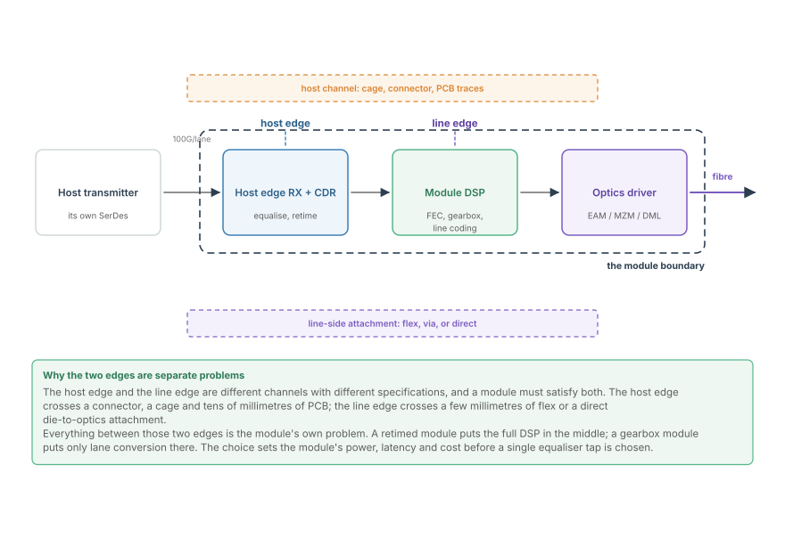
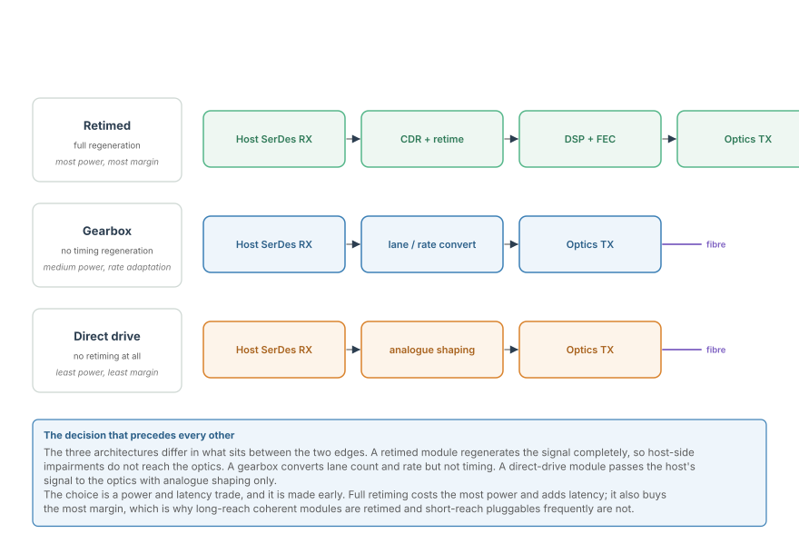
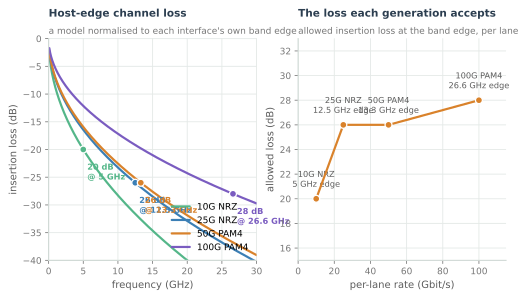
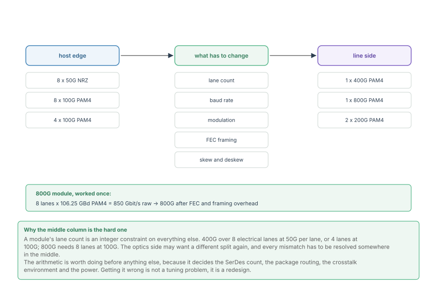
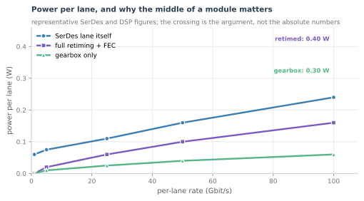

The SerDes in an Optical Module
The two electrical edges of a module, retimed versus gearbox architectures, and why an optical DSP's first design decision is how many serial lanes it faces.
Everything in the optical part of this course describes what a coherent DSP does to a signal it already has. This part is about how it gets the signal: through serial lanes, at 50 or 100 gigabits per second each, across a connector, a cage and tens of millimetres of printed circuit board. A great many of an optical module's hard problems live on those lanes rather than in the equaliser, and this part is about them.
The reason is structural. A module has two electrical edges and both must be satisfied at once, with different channels, different specifications and often different lane counts. The middle of the module -- the DSP that converts one into the other -- is where the design decisions are made, and the first of them is how much of that middle exists at all.
Two edges, one module

The host edge is where the module plugs into a switch or a router. The signal has come from the host's own SerDes across a connector, through a cage, along PCB traces and into the module. That path is specified by an interface agreement, and it is the harder of the two edges in every respect except length.
The line edge is where the module's own output reaches the optics: an electro-absorption modulator, a Mach-Zehnder modulator, or a directly modulated laser, reached through a few millimetres of flex or a direct die-to-photonics attachment. It is short, and it is entirely the module vendor's problem.
In between sits the module's own silicon, and what it contains is the defining architectural choice:
- A retimed module recovers the data from the host edge, retimes it, and transmits it on the line edge. The two edges are electrically independent, and impairments on one do not reach the other. This costs the most power and adds latency.
- A gearbox module converts lane count and rate but does not regenerate timing. Cheaper, and enough when the host edge is clean.
- A direct-drive module does neither: the host's signal is shaped and handed to the optics. Least power, least margin, and only viable at short reach.

The figure makes the trade visible: each architecture is a different set of blocks between the same two edges, and the blocks are what cost power.
Why the host edge is the hard one

The host edge has become harder with every generation, and it is worth seeing why. A 25G NRZ lane has a band edge at 12.5 GHz and is allowed about 26 dB of loss there. A 100G PAM4 lane has its band edge at 26.6 GHz -- more than twice the frequency -- and is allowed roughly the same loss.
Loss in a PCB rises roughly with the square root of frequency, so moving the band edge up by a factor of two costs about 3 dB, and the loss budget did not grow to accommodate it. What absorbed the difference was equalisation, and the equalisation is in the DSP.
The lane arithmetic
Every module design begins with a count, and the count is usually not the same on both sides.

A 400G module is commonly eight host lanes of 50G, or four of 100G, or (for a shorter reach) eight electrical lanes feeding a single 400G optical signal. An 800G module is eight lanes at 100G. The optics side may want a different split again -- one 800G wavelength, or two 400G -- and every mismatch has to be resolved in the middle.
The arithmetic itself is simple, and doing it first is what avoids a redesign:
An 800G module built as eight lanes of 106.25 GBd PAM4 carries $8 \times 106.25 \times 2 \approx 1700$ Gbit/s of raw capacity, against 800 Gbit/s of payload. The difference is framing overhead, forward error correction, and the coding that makes the line code DC-balanced -- roughly a factor of two, which is the honest price of a modern high-speed link.
The power budget is the real constraint

Every block in the middle of the module costs power, and the cost is not linear in rate. The curves in the figure are representative rather than measured -- the annotation says so -- but their shape is the industry's lived experience:
- The SerDes lane itself scales roughly with rate, because it is analogue and its bandwidth must follow the baud rate.
- Full retiming and FEC is sub-linear in rate, because the datapath is digital and shrinks with process.
- A gearbox is cheaper still, because it converts lanes without regenerating them.
A pluggable module has a hard power ceiling set by the cage's thermal design -- commonly a few watts to a few tens of watts, depending on the form factor. That ceiling is what decides retimed versus gearbox, long before any algorithm is chosen, and it is why the same optical reach can be implemented two ways at two different module classes.
Where this connects
- A module has two electrical edges with different specifications, and the architecture in between is its first design decision.
- Host-edge loss has grown with the band edge while the loss budget has not, so equalisation absorbed the difference.
- The lane arithmetic -- lanes, baud rate, bits per symbol -- decides the SerDes count and the achievable payload.
- Power is the constraint that decides how much of the module is retimed, and it is set by the form factor rather than by the algorithms.
- The next chapter takes one lane apart: what is actually inside a 100G serial link.
In the optical link
The DSP in the middle of a retimed module is the coherent DSP this course has been building. Its line-side blocks are exactly the ones in The Coherent Optical Receiver: A DSP Pipeline Tour: the 90-degree hybrid, the balanced detectors, the ADC array, dispersion compensation, polarisation demultiplexing, carrier recovery, and the FEC. The host edge is this part's subject; the line edge is the optical part's.
The two edges fail differently, and diagnosis follows the edge. A host-edge problem shows up as a lane that will not train, an equaliser that will not converge, or a pre-FEC error ratio that depends on the host card. A line-edge problem shows up in the constellation -- closure in amplitude or phase that has nothing to do with the electrical channel. Separating them is the first step in every module bring-up, and the retimed architecture is what makes the separation possible.
And the arithmetic is the same arithmetic. An 800G coherent module's raw line rate, its FEC overhead and its pre-FEC target are computed exactly as this chapter computes them for a copper lane. What changes at the line edge is that the channel is a fibre rather than a trace, so the impairments have different names and the equaliser has different work to do. The budget structure does not change at all.